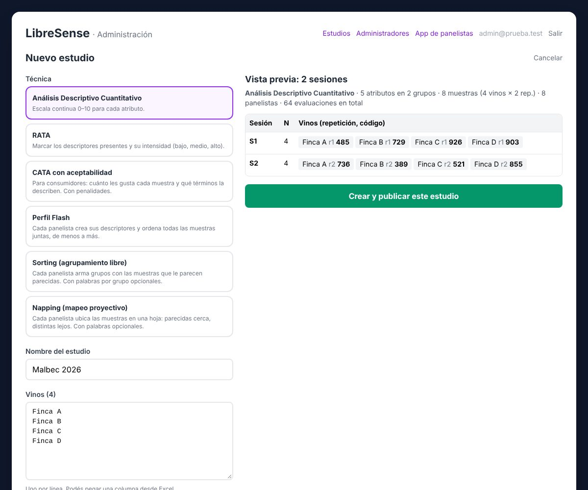
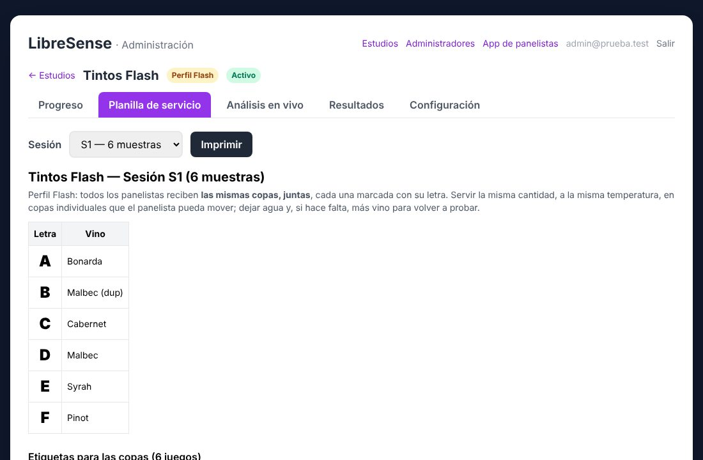
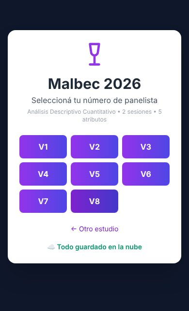
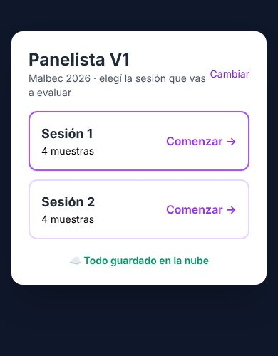
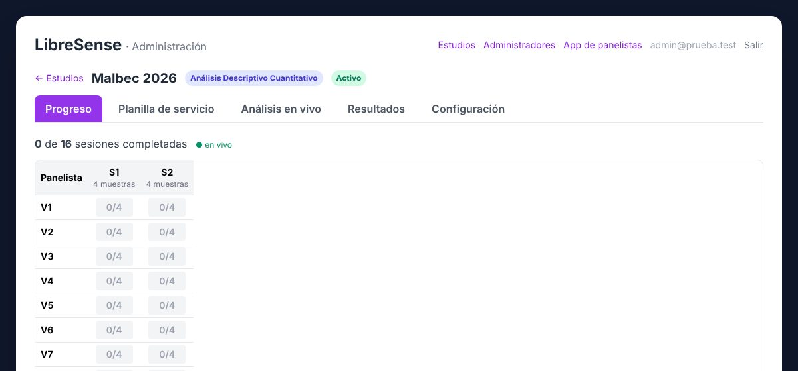

En la lista de estudios tocá + Nuevo estudio. El formulario cambia según la técnica elegida, pero la lógica es siempre la misma: completar los datos, tocar Generar vista previa, revisar el diseño y recién entonces Crear y publicar este estudio. Nada se publica hasta ese último paso, y el formulario recuerda lo que escribiste si cerrás la página.

| Campo | Qué es y cómo elegirlo |
|---|---|
| Nombre del estudio | Es lo que ven los panelistas al elegir el estudio. Se puede cambiar después en Configuración. |
| Vinos | Uno por línea (se puede pegar una columna de Excel). Son los nombres reales: los panelistas nunca los ven, solo ven códigos. No se pueden repetir ni contener el carácter “|”. |
| Repeticiones | Cuántas veces evalúa cada panelista cada vino. Con panel entrenado (ADC, RATA) se usan 2–3 para medir la repetibilidad; con consumidores, 1. |
| Vinos por sesión | Cuántas muestras prueba un panelista en una sesión (ADC, RATA, CATA). Con vinos, lo habitual es 4–8 para evitar la fatiga. La app reparte vinos × repeticiones en sesiones y muestra el resultado (por ejemplo “24 muestras → 3 sesiones (8 + 8 + 8)”). Un vino no se repite dentro de una sesión. |
| Repartir parejo | Si la cuenta no es exacta, reparte las muestras de forma pareja (6+6+6+6 en lugar de 7+7+7+3). |
| Panelistas | Cantidad de puestos. Se numeran V1, V2… Conviene que sea múltiplo del número que sugiere la app para que el diseño quede balanceado (ver Williams, abajo). |
| Semilla | Número que fija el sorteo. Con la misma semilla y los mismos datos se obtiene exactamente el mismo diseño y los mismos códigos (sirve para documentar o rehacer un estudio). |
En las técnicas en las que las muestras se prueban de a una (ADC, RATA, CATA, Napping, Sorting), el orden de presentación importa: la primera muestra suele puntuarse distinto (efecto de posición) y cada muestra influye en la que viene después (efecto de arrastre). El diseño de Williams (un cuadrado latino balanceado) lo controla: cada muestra aparece la misma cantidad de veces en cada posición y sigue a cada una de las otras la misma cantidad de veces.
Cada muestra de una sesión tiene un código de 3 cifras al azar, el mismo para todos los panelistas de esa sesión, y distinto en cada repetición. En el Perfil Flash las copas se identifican con letras (A, B, C…) y no se usa Williams porque todas las copas se presentan juntas (capítulo 9).
En ADC, RATA y CATA se puede marcar “Mismo orden para todos, sin códigos”. Es útil en clases y prácticas, cuando todos prueban juntos y se comenta cada vino:
En el Napping la opción es “Mismo orden para todos, con letras”: todos prueban las muestras en el orden de la lista, identificadas con letras como en el Perfil Flash (A = el primer vino de la lista, B = el segundo…; los duplicados van al final).
Sin orden balanceado ni códigos al azar, los resultados pueden tener efectos de orden (el primer vino se puntúa distinto) y de expectativa (“el Vino 5 debe ser el mejor”). Para sacar conclusiones sobre los vinos, usá el diseño de Williams.
En ADC, RATA y CATA la lista se escribe uno por línea. Se pueden agrupar con títulos:
# Aroma ## Frutal Frutos rojos Ciruela ## Especiado Pimienta # Boca Acidez Astringencia
# Título es una modalidad (Aroma, Boca…); ## Subtítulo es una categoría dentro de ella. En la pantalla del panelista aparecen como encabezados.Cuando hay varios estudios abiertos a la vez, se puede marcar “Pedir un código para entrar”, como la contraseña de una reunión de Zoom. Por defecto no está marcado. La app propone un código de 6 caracteres fácil de dictar (se puede cambiar). Los panelistas lo escriben una vez, antes de elegir su número, y el dispositivo lo recuerda; no importan mayúsculas ni espacios. El código se ve, se cambia o se saca en Configuración, y sale impreso en la planilla de servicio y en la hoja del QR.
No es solo una pantalla: la base de datos rechaza las respuestas que no traen el código correcto. Si se cambia el código con la evaluación en marcha, los panelistas que ya habían entrado tienen que escribir el nuevo.
En Perfil Flash, Napping y Sorting se puede servir una muestra dos veces en la misma sesión, con otro código, sin que el panelista lo sepa. Sirve para medir qué tan consistente es cada panelista: lo ideal es que la trate igual que su original. Se escriben en “Duplicados”, con el mismo nombre que en la lista de vinos, y en los resultados aparecen como “Vino (dup)”. Con uno o dos alcanza.
En el estudio, la pestaña Planilla de servicio tiene, para cada sesión, la tabla vino → código (para rotular las copas) y la bandeja de cada panelista, con el orden en que tiene que recibir las muestras. Se imprime con el botón Imprimir. En el Perfil Flash trae además etiquetas recortables con las letras.

Los panelistas entran a anibalacatania.github.io/libresense. Si hay un solo estudio activo, se abre directamente. Si hay varios, eligen el suyo. En Configuración está el link directo de cada estudio (con el botón Copiar), que abre ese estudio sin pasar por la lista: es ideal para mandarlo por WhatsApp. Debajo está el mismo link como código QR: se puede descargar como imagen (para proyectarlo o mandarlo) o imprimir una hoja con el nombre del estudio y el QR en grande para dejar en la sala. Los panelistas lo escanean con la cámara del celular y entran directo. La planilla de servicio impresa también lleva un QR chico en el encabezado.


La app no pide identificación: confía en que cada panelista elige su número. Conviene anotar en la planilla qué persona tiene cada número (los resultados solo muestran V1, V2…) y que cada uno use siempre el mismo en todas las sesiones.
La pestaña Progreso muestra, en vivo, una tabla de panelistas × sesiones: gris = no empezó, amarillo = en curso (por ejemplo 3/6), verde = completa. Sirve para saber a quién le falta y cuándo cerrar la sesión.

La pestaña Análisis en vivo se actualiza sola con cada respuesta que llega. Es útil para detectar problemas en el momento (un panelista que no discrimina, un vino defectuoso, un atributo que nadie entiende), pero con pocos datos los resultados cambian mucho: la app avisa cuando todavía hay pocas evaluaciones. El análisis formal se hace al final, con todas las respuestas (capítulo 13).
Cuando terminó la evaluación, en Configuración tocá Cerrar estudio: desaparece de la lista de los panelistas y no acepta respuestas nuevas (si alguien lo tenía abierto, ve el aviso de que el estudio fue cerrado). Se puede reabrir cuando haga falta.